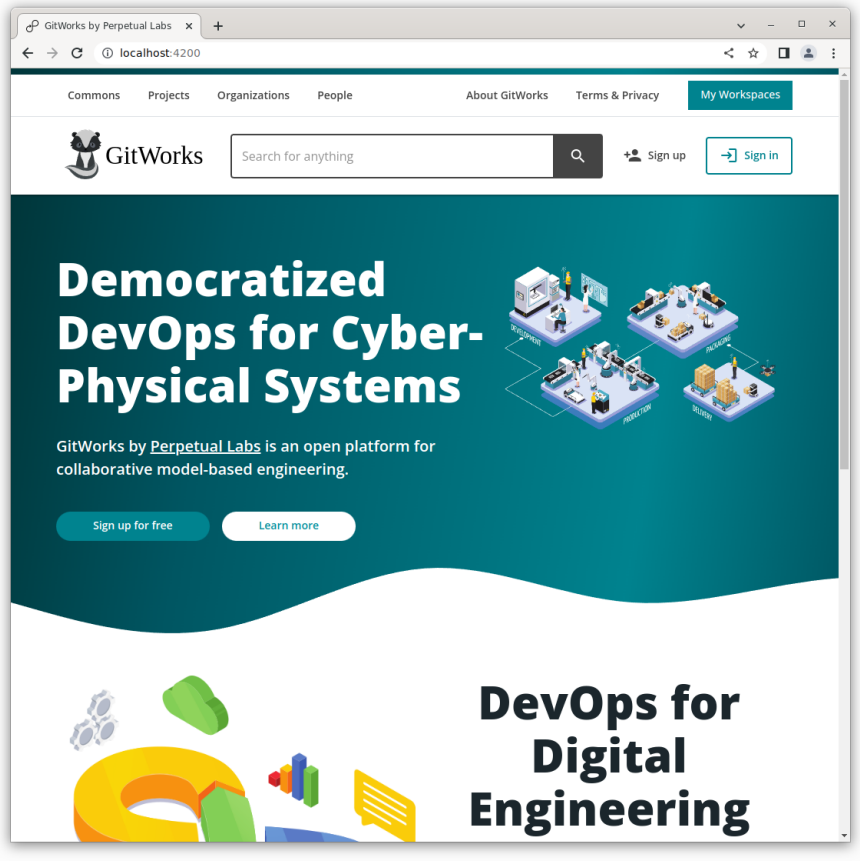

The Vision
A typical Model-Based Design (MBD) contains three types of MBD Asset:
-
Models, which are mathematical or formal abstractions of system elements (components or subsystems).
-
Tools, which are software packages that enable the development, analysis, and simulation of models.
-
Infrastructure, which refers to all the software environments, networking, shared drives, libraries and
dependencies needed to run the tools.
MBD experts also offer support services, including the development of assets or the combination of assets to perform
specialised analysis tasks such as model checking, safety analysis, synthesis of hardware and software deployments,
fault detection and recovery, and much more. Let us call these MBD Services.
Our overall idea is to create a web-based platform that enables diverse individuals and organisations to collaborate
on the development and (access-controlled) sharing of MBD Assets. It is well established in the literature that such a
platform would be highly beneficial in industries including Aerospace, Automotive, Marine, Robotics, Built
Environment and many more.
Let us consider a use case. An Original Equipment Manufacturer (OEM) may invite their suppliers to join the
model-based development of a Cyber-Physical System (CPS) by creating and sharing CPS-level architecture and
requirements models, as well as a requirement verification analysis tools. Through the platform, the suppliers will
make available the models and data necessary to verify the CPS-level properties specified by the OEM’s
requirements. These diverse models can be integrated at the CPS-level and the infrastructure to perform the analysis
can be provisioned on demand (infrastructure as code and infrastructure as a service). The idea is that all the partners
are able to replicate the analysis independently and verify the CPS-level properties.
In order to protect suppliers’ intellectual property, the platform enables white-box, grey-box and black-box models
so that it is possible to control access to the underlying IP whilst still enabling all stakeholders to independently
verify the system-level properties they are interested in.
The assets and analysis capabilities are made available as services and the necessary computing infrastructure and
software environments are provisioned on demand by the platform.
The HUBCAP platform
The HUBCAP platform aims to fulfil such a vision by making MBD more accessible to a range of businesses,
particularly SMEs, as well as research and innovation organisations involved in the development of CPSs.
To support this vision, the HUBCAP platform provides the following functionalities:
-
Social Platform: This enables organisations to create profiles and promote their offers, this being MDB
related assets and services. It supports social activity such as direct user messaging, matchmaking, and
expert search.
-
MBD catalogue: This is an artefact repository where the different organisations can publish their MBD
assets for reuse from other users (based on access control). It supports search and discovery of new assets.
-
Marketplace: This enables asset developers and service providers to monetise their work through different
business models such as subscription or pay-per-use (not currently functional).
-
Sandbox Functionality: These are environments in which users can test and experiment with a solution in a
secure and trusted environment without the need for local installation. The user can select a combination of
models and tools, and preconfigured infrastructure, pack them in an isolated sandbox and start working with
them via a web browser. Models and services are presented to the user in the catalogue, where the users will
choose the tool, the kind of analysis they want to try, and models associated with it. If needed, the users will
be able to get support from tool experts via the platform’s collaboration services. This functionality allows
users to bypass the problem of replicability of custom modelling and simulation environments as well as the
cost of acquiring tools licences if a suitable subscription or pay-per-use business model is available.
-
Supporting Functions:
- Identity Management This subsystem centralises user authentication, defining roles and granting
access while using the other applications.
-
Security middleware ensures data privacy of models and analysis results produced.
GitWorks

GitWorks is an open platform for democratisation Model-Based Design of CPSs. It is currently under development
by Perpetual Labs Ltd in collaboration with the INTO-CPS Association, the Open Source Modelica Consortium
(OSMC) and the OpenCAESAR project 1,
2.
GitWorks follows in HUBCAP’s footsteps to fulfil the Vision described above. As such, it shares many objectives
and functionalities with the current version of HUBCAP but also substantially expands on these with more advanced
collaboration and development features as well a more flexible “Infrastructure on Demand” functionality.
In particular, GitWorks takes inspiration from popular tools and concepts from the world of DevOps (exemplified by
platforms such as GitHub and GitLab) and adapts them to Model-Base Design. We call this approach Digital
Engineering, Manufacturing and Operations or DEMOps for short.
The GitWorks platform provides the following functionalities:
GitWorks Commons
The GitWorks Commons enables the seamless reuse and monetisation of MBD assets across organisational
boundaries. It is primarily a Package Repository where users and organisations can publish their MBD Assets for
reuse by other organisations, either open-source or commercially. It fulfils the same role as the MBD Catalogue and
the Marketplace in HUBCAP. However, the Commons provides some advanced functionalities that dramatically
improve the user experience such as:
-
Dynamic Releases, this refers to the possibility of dynamically specifying which release of a certain Assets
the user wants to use when creating a new project.
-
Semantic discovery and integration. This function leverages semantic technologies to query the metadata
extracted from the packages. This enables advanced search functionalities such as searching for a Modelica
Component or an FMU that fits a particular port and behavioural signature.
-
Multiple publication and deployment possibilities. Vendors can choose whether to allow users to
download sources and/or binaries (white box), or only provide cloud-based access (Grey and Black box).
For example, a Modelica model can be published as: (1) source code (i.e. a model library), (2) compiled
FMU (Model-Exchange or Co-Simulation), and/or (3) as a REST service that can be used in a federated
co-simulation.
-
Monetization strategies. GitWorks will support different monetization strategies similar to those proposed
for the Digital Manufacturing Commons (DMC) (Beckmann et al. 2016), including (1) payment for each
download or execution, (2) payment based on computational usage, and (3) freemium software as a service.
To support federated collaboration for enhanced data security and intellectual property protection, we are also
actively working on the integration of co-simulation engines, specifically the Maestro2 engine from the INTO-CPS
project 3,4.
GitWorks Projects
This environment provides advanced functionalities to support collaborative development of MBD assets not
currently supported in the HubCAP platform:
-
Distributed Version Control (DVC) and Change Management (CM) functionalities
for the collaborative development of MBD Assets. It introduces the notion of a Git-like history of changes made across
inter-related model fragments. The benefits are as follows:
-
Enables traceability of information provenance and design decisions.
This refers to the ability to trace from an authority to its design decisions and constraints,
and from the latter to their rationales. Without this capability, a system description becomes
a disorganised collection of information artefacts.
-
Enables durability. This refers to the ability to version control the information
that describes or analyses a system in such a way that versions become immutable. Without this, it
is impossible to perform audits and repeat analyses.
-
Continuous Integration/ Continuous Delivery functionalities (CI/CD)
This refers to the capability of easily automating tedious and error prone activities that need to be
repeated regularly during the development process by creating a predefined sequence of tasks(called pipelines)
that are triggered by specific events. In the context of CPS development, the tasks being automated are the
types of analysis described above. The benefits are as follows:
-
Enables efficiency.
The automation saves development time, reduces error and improves reusability.
-
Enables repeatability. This refers to the ability to encapsulate the analysis of the system
description, including its dependencies, such that it becomes repeatable. This is important to
maintain confidence in the analysis over time and use it to assert desirable properties.
GitWorks Workbenches
This subsystem provides the users with specialised development environments for different types of modelling and
analysis paradigms. The environments are provisioned on demand and accessible through the browser. This is
achieve through two main mechanisms:
-
Heavy-weight workspaces via Virtual Desktop Infrastructure over noVNC.
-
This environment will provide feature parity to the “Sandbox Functionality” in HUBCAP.
-
Light-weight workspaces via VSCode for Web, these are native web applications that provide a much richer
and collaborative user experience.
-
integrated Git version control
-
real-time collaboration
-
first example of workbench available in GitWorks will be a Web-based Modelica editor
GitWorks Community
This environment will provide feature parity to the “Social Platform” in HUBCAP. Essentially, the Community
environment enables users and organisations on the platform to connect with one another in a kind of social network
for Digital Engineering. Each user is provided with a profile page that contains a public bio with an activity stream
and links to associated published artefacts, project workspaces, and organisations.
GitWorks supporting functions
This includes a set of standard user support features such as secure authentication, role-based access control, Data
security and privacy.
Transition plan
In concurrence with the conclusion of the HUBCAP project, the current public deployment of the HUBCAP
platform hosted by Eng.it is scheduled to be retired at the end of 2022. In early 2022, a team was formed to
investigate the possibility of extending the life of the HUBCAP platform beyond the end of the project by seeking
collaborations with other open-source projects or private organisations.
Perpetual Labs was chosen as our partner for the future exploitation of the HUBCAP results because of the strong
alignment between the objectives of GitWorks and HUBCAP and the prospects of joining forces.
Our provisional transition plan for the HUBCAP platform is as follows:
-
Phase 1: HUBCAP-GitWorks Integration (Jan - Dec 2023)
-
Public deployment of HUBCAP Platform hosted by Perpetual Labs (AWS or GCP). All HUBCAP
Platform capabilities still available to users for 1 yea
-
User management is migrated to GitWorks and common log-in
-
Development of Perpetual Labs Commons (the marketplace) and Workbenches (the virtualisation
environment)
-
Phase 2: Transition (Jan 2024 onwards)
-
GitWorks Commons and Workbenches are operational
-
Integrated virtualization environment to replace the sandbox capability of the HUBCAP platform
(preserving current functionality and improving efficiency and user experience)
-
Users and digital assets are migrated to GitWorks
-
Public instance of HUBCAP platform hosted by Perpetual Labs is retired
Nothing should change for current HUBCAP users until the end of 2023. They should be able to login with the same
credentials (but might need to explicitly agree to new T&Cs) and use the HUBCAP platform as it is today. The two
platforms (GitWorks and HUBCAP) will operate independently during 2023 and users will not be required to use
GitWorks in order to access HUBCAP. They will be invited to try the beta version of the GitWorks platform if they
wish.
At the end of 2023, the public instance of the HUBCAP platform hosted by Perpetual Labs will be phased out. Users
who choose to do so will be able to migrate their projects to the GitWorks platform, which by then should support all
the core functionalities.
Authors
- Gianmaria Bullegas, Perpetual Labs,
gian@perpetuallabs.io
- Mohamad Omar Nachawati, Perpetual Labs,
omar@perpetuallabs.io
- Steve Jenkin, Perpetual Labs,
joe@perpetuallabs.io
- Andrey Vasilyev, Perpetual Labs,
andrey@perpetuallabs.io
- John Fitzgerald, Newcastle University,
john.fitzgerald@newcastle.ac.uk
- Peter Gorm Larsen, Aarhus University,
pgl@ece.au.dk
Bibliography
-
Mohamad Omar Nachawati, Gianmaria Bullegas, Andrey Vasilyev, Joe Gregory, Adrian Pop, Maged Elaasar,
Adeel Asghar. Towards an Open Platform for Democratized Model-Based Design and Engineering of Cyber-Physical
Systems. in Proceedings of the American Modelica Conference 2022 102–114 (2022).
-
Vasilyev, A., Bullegas, G., Nachawati, O., Elaasar, M. & Jenkins, S. Developing an Open Platform for
Democratised MBSE.
-
Larsen, P. G. et al. Integrated tool chain for model-based design of Cyber-Physical Systems: The INTO-CPS
project. in 2016 2nd International Workshop on Modelling, Analysis, and Control of Complex CPS (CPS Data) 1–6 (2016).
-
Thule, C., Lausdahl, K., Gomes, C., Meisl, G. & Larsen, P. G. Maestro: The INTO-CPS co-simulation framework.
Simulation Modelling Practice and Theory 92, 45–61 (2019).